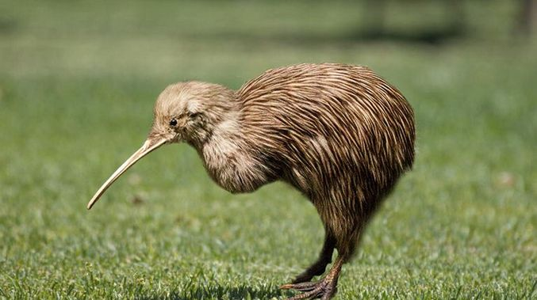

The Kiwi Bird
| Home |
Habitat |
Offspring |
References |
|---|
About
The Kiwi bird is one of the five species of flightless birds belonging to the genus Apteryx and found in New Zealand. The name is a Maori word referring to the shrill call of the male.
Kiwis are grayish brown birds the size of a chicken. They are related to the extinct bird moas.
Kiwis are unusual in many respects:
- The nostrils are at the tip of the long flexible bill
- The feathers have no aftershafts and are soft and hairlike
- The legs are short and muscular, and each of the four toes has a large claw.
The eyes are small and inefficient in full daylight. They ear openings are large, well developed and have very long bristles occur at the base of the bill.
Habits
Kiwis are typically nocturnal, which means they sleep during the day and are active during the night. Throughout the night, they spend their time foraging for food.
When it's not foraging, it is patrolling its territory. It will leave behind highly odorous droppings to mark its area as it walks. The only other kiwis allowed in its territory are its spouse, its young and its adult children. If another kiwi does wander into another's territory they will fight.

Contact | |
|---|---|
Email: | 1510280@fcpsschools.net |
Address: | Langley HS |